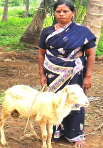
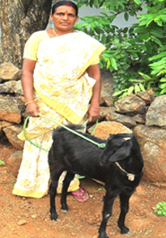
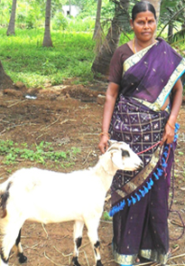
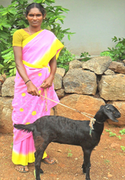

Salem Social Service Society
To proclaim liberty to the captives


 Salem Social Service Society Sustainable Development Goal
Salem Social Service Society Sustainable Development Goal
CASE STUDIES - Salem Social Service Society
Goat Recipients
Village : Mallamoopanpatty
Name : Pusphavalli
Age : 48
Education level : 8th
Monthly Income : 1450
Number of children and ages : 3 (M-1, F-2)
How do you take care of the goat? Is it difficult to do so?
"I take care of the goat as a fourth child. I keep the goat inside the house. I take the goat for feeding by walking it around to find grasses and weeds. I also feed it coconut byproducts and give it water every day. It's not difficult to take care of the goat; I treat it as an asset."
How has the goat impacted your life socially and economically?
"Socially I feel better off because previously I had no property. Our home is rented and the land we farm is also rented. Therefore, the goat is the first property that my family actually owns. Economically the goat will give 10-12 kids over the next four years, which will equal about 30,000 Rupees including the mother goat. That is a lot of money in this village."
What do you hope to achieve with the goat?
I hope to get the ability and motivation to escape poverty and to advance economically.
What are your plans for the goat?
"My plan is to pass on a goat from the first delivery and to keep adding goats to make a herd. I will keep all the females and one male so that my herd keeps growing. I will sell the other males in the market to make money along the way."
How have you seen the community change/advance as a result of the program?
"The microcredit group has added many new members because the goat program has attracted them. This is good for the community because it provides us with loans and assets to advance our lives."

Village : Ayyamperumapatti
Name : Prema
Age : 29
Education level : 10th
Monthly Income : 1000
Number of children and ages : Nil
How do you take care of the goat? Is it difficult to do so?
"It is not hard to care for the goat. My husband is a woodcutter so he is able to bring home food everyday for the goat. He brings leaves, plants, and other food for the goat each day so we are easily able to feed it. We care for the goat as if it is our child, her name is Mahalakshmi."
How has the goat impacted your life socially and economically?
"Socially I feel my status has improved. Now I own property and not many people in our village own property. I haven't benefitted economically yet because I only had the goat for three months; however, the goat is conceived so I will look forward to getting benefits in the near future."
What do you hope to achieve with the goat?
"I hope to make a fellow villager happy by kindly passing on a goat to a friend in the community. Then, I hope to increase the number of goats in the next few years to add to the family's income."
What are your plans for the goat?
"I wish to keep the goat forever. I will sell the male goats it delivers - except for one for Reproduction - and keep the female goats to expand into a herd. I will keep the original goat until it dies because I feel it is part of the family."Village : Mallamooppanpatty
Name : Shanthi
Age : 39
Education level : 10th
Monthly Income : 1500
Number of children and ages : 2 (M.C-1, F.C-1)
How do you take care of the goat? Is it difficult to do so?
"I take care of the goat by feeding it grass, leaves, and agricultural waste from coconuts and rice. I can easily fetch the food myself or let the goat walk around to find its own food. I like the goat very much, I have named her Durga."How has the goat impacted your life socially and economically?
"I was really suffering before getting the goat. Times are still tough, but they are better now. My husband hasn't permanent income he is working as an agricultural labor and we live in a very small thatch hut. We don't have any possessions or income and my three children are going to school."What do you hope to achieve with the goat?
"I hope to earn a better livelihood with the goat. Soon the goat will give birth and I will Be able to turn that into money. Goats are the highest priced meat in the market. One kilogram of goat meat costs 300 Rupees. That is a lot of money because fish goes for about 100 Rupees per kilogram and chicken goes for 90 Rupees per kilogram. Goats are the most profitable meat because they are in high demand and they are tasty. Also, I know the goat will turn a profit because it is insured. The goat is insured for death and theft by paying a one-time 110 Rupees premium every three years. The coverage also provides me with 25,000 Rupees accidental insurance. It is part of the Oriental Insurance program of the Government of India. The program actually costs 420 Rupees per three years, but we get a discount."
Village : Mallamoopapanpatty
Name : Chellammal
Age : 48
Education level : 5th
Monthly Income : 1600
Number of children and ages : Nil
How do you take care of the goat? Is it difficult to do so?
"I take care of the goats by walking them around the wastelands here. There are many empty plots of land that have plants growing so it is easy to feed the goats. I also collect food as I walk around and bring it home for the goats."
How has the goat impacted your life socially and economically?
"Socially I feel better because I was able to pass on a goat to another member of the village. I got the original goat in 2010 so I passed on one of the first goats and I have been multiplying them every since. Minus the goat I passed on, I currently have the initial goat, 4 adult goats, and 2 kids. The total worth is about 20,000 Rupees so I feel that is a lot of money. To me the goats represent savings."
What do you hope to achieve with the goat?
"I plan to multiply the goats before I sell some of them. I want to always have 10 goats so that I have a steady stock of assets to protect me in bad times. Once I get above ten goats I will sell some of them and continue to sell them as more goats are born."
What are your plans for the goat?
"My plans are to expand the family business with the income from the goats. We have a small petty shop. The plan is to keep expanding the shop as we sell the goats."
How have you seen the community change/advance as a result of the program?
"I feel like a role model to others in the village because I have been very successful in my goat rearing. The community is closer now and we all feel blessed for the goat program."
How did it feel to pass on a goat?
"I passed on the goat happily. I was honored to give a goat to someone else because not long ago I was the one who was given a goat. After giving the goat my own goats have multiplied so I feel that it's good luck to give."

Village : Mallamoopapanpatty
Name : Radha
Age : 25
Education level : 5th
Monthly Income : 1350
Number of children and ages : 3(F-2,M-1)
What do you hope to achieve with the goat that you were given?
"I plan to multiply the goat into a herd. I will reinvest in the goats because all I know how to do is rear goats, it is my livelihood."
How did it feel to receive the goat?
"I am extremely happy and feel blessed to be given such an asset from a fellow villager. I can't believe that it has happened to me. Right now my goat is pregnant so I look forward to giving a goat to another villager soon. It's nice that we can help ourselves and each other."
How do you feel about participating in the program?
"I am happy because I have been able to improve my life. Rearing goats and agriculture are all that I know how to do. Without the goat my life would not be as good and I would not have a plan for the future. My kids also like the goat, they think the goat is fun and they like to play with it and feed it. I named the goat Ganesh because I got the goat around the same time that my son was born. I felt it was a coincidence so I named them both Ganesh."
How do you take care of the goat? Is it difficult to do so?
"Taking care of the goat is easy. I bring it to empty areas of land to feed on the grasses and weeds that grow naturally. Sometimes I also purchase bundles of grass for 3 Rupees."